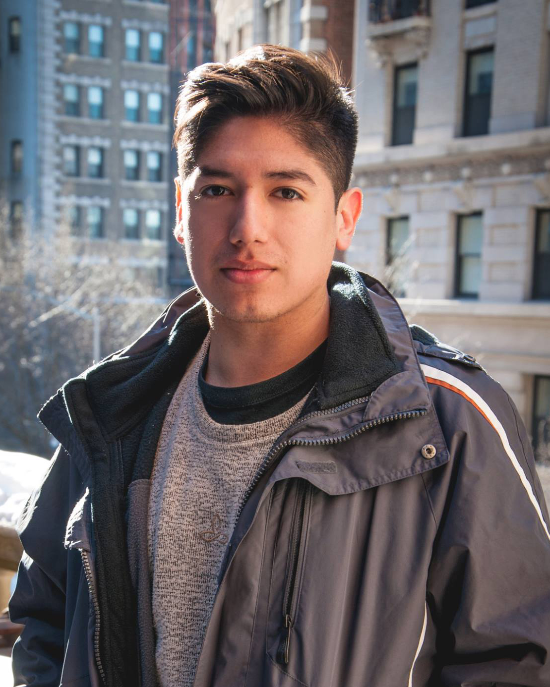

About Me

Jeffry Valadez is a multimedia artist & storyteller currently based in Dallas, TX.
He holds a BFA degree from New York University’s Tisch School of the Arts for Photography & Imaging and Latin American Studies.
Trained in alternative process image making, his work includes wet-plate collodion, portraiture, and documentary imagery.
Working at the intersection of Latinx diaspora & queerness, he strives to find new ways to engage in media advocacy through education and technology.